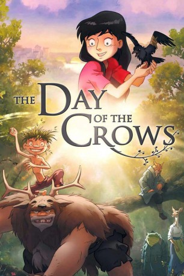

#3857 Der Tag der Krähen
 
 IMDB-Wertung: 7.3 / 10
IMDB-Wertung: 7.3 / 10  Metascore: 0
Metascore: 0 
Ein Junge lebt mit seinem griesgrämigen Vater im Wald. Als dieser verletzt wird, sucht sein Sohn Hilfe - und verlässt zum ersten Mal den Wald, was ihm der Vater streng verboten hatte. Der Sohn entdeckt, dass es jenseits des Waldes noch etwas anderes gibt: Menschen, die ihn wie einen der ihren aufnehmen ...
Jahr: 2012
Dauer: 90 Minuten
FSK:
Land: Frankreich Studio: GkidsTonspuren: DD2.0 - ,
Untertitel:
Auflösung: 1080p (1920x816) Größe: 4945 MB
Genre: Drama, Fantasy, Animation/Trick
Regisseur: Jean-Christophe Dessaint
Drehbuch: Bruce A. Evans
Soundtrack:
Darsteller:
Datei: X:\Kinder Filme (N-Z)\Tag der Krähen, Der (2012, FSK, 1920x816).mkv seit 22.06.2016
Festplatte: Kinder-Filme+Trick
 Es gibt insgesamt 87 Filme in der Gruppe 'Kinder Filme (N-Z)'
Es gibt insgesamt 87 Filme in der Gruppe 'Kinder Filme (N-Z)'